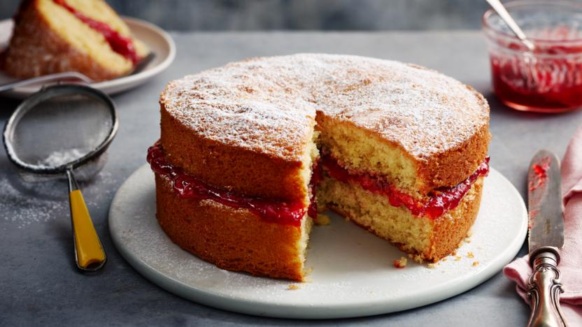

Baking Basics
Easy recipes to get you started... lets bake!
Patisserie Trio
Home
(current)
About
Recipes
Chocolate Brownies
Victoria Sponge
Chocolate Chip Cookies
Blueberry Muffins
Jam Tarts
Contact Us
Search
Victoria Sponge
Victoria Sponge

Ingredients
200g unsalted butter, softened, plus extra for greasing
200g caster sugar
1 tsp vanilla extract
4 medium eggs
200g self-raising flour, plus extra for dusting
6 tbsp raspberry jam
250ml double cream, whipped
Icing sugar, for dusting
Method
Heat oven to 190C/170C fan/gas 5. Grease and flour two 20cm sandwich tins.
Place 200g softened unsalted butter, 200g caster sugar and 1 tsp vanilla extract into a bowl and beat well to a creamy consistency.
Slowly beat in 4 medium eggs, one by one, then fold in 200g self-raising flour and mix well.
Divide the mix between the cake tins, place into the oven and bake for about 20 mins until risen and golden brown. The cakes should spring back when gently pushed in the middle.
When ready, remove from the oven and allow to cool for 5 mins in the tin, before turning out onto a wire rack and cooling completely.
Spread about 6 tbsp raspberry jam onto one cake and top with 250ml whipped double cream. Sandwich the cakes together and dust with icing sugar.